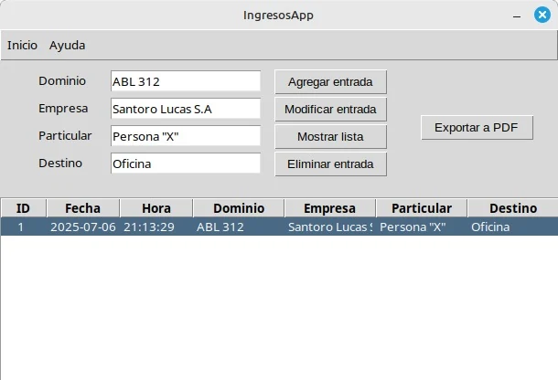
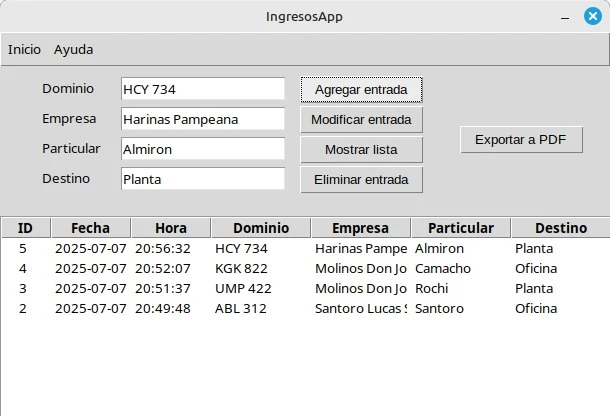
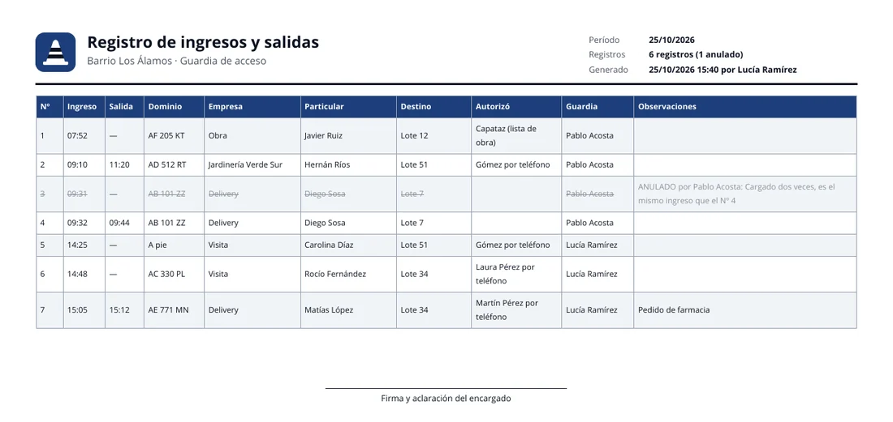

Cuando llega un vehículo
Se cargan el dominio, la empresa, la persona y el destino. La fecha y la hora se registran solas al guardar, así que no hay que mirar el reloj ni escribirlas a mano.
IngresosApp V 1.0
El registro de ingresos para la guardia de barrios cerrados, parques industriales y otros predios privados. Cada vehículo se carga en segundos y al final del día todo queda en un PDF.
Gratuita y sin instalación: se descarga y se abre.

Se cargan el dominio, la empresa, la persona y el destino. La fecha y la hora se registran solas al guardar, así que no hay que mirar el reloj ni escribirlas a mano.

Todos los ingresos quedan en una lista ordenada. Si un dato se cargó mal, se selecciona el registro y se modifica o se elimina, sin tachones en el cuaderno.

Un clic en «Exportar a PDF» genera el reporte con todos los ingresos, listo para imprimir, enviar o archivar como respaldo.
Publicada en enero de 2024. Incluye la carga, modificación y eliminación de ingresos, la lista con fecha y hora automáticas y la exportación a PDF.
IngresosApp.exe, 12,6 MB. Como no está firmado digitalmente, Windows puede mostrar un aviso de SmartScreen la primera vez.IngresosApp, 13,9 MB. Antes de abrirlo hay que darle permiso de ejecución: chmod +x IngresosApp.IngresosApp es un proyecto personal de Lucas Emanuel Santoro, desarrollado en Python con Tkinter, SQLite y FPDF. El código de la aplicación es abierto.
La primera versión de este sitio funcionó en AWS, con EC2, Nginx y Gunicorn, como práctica de infraestructura cloud. Hoy es un sitio estático publicado con GitHub Pages; su código también está en GitHub.